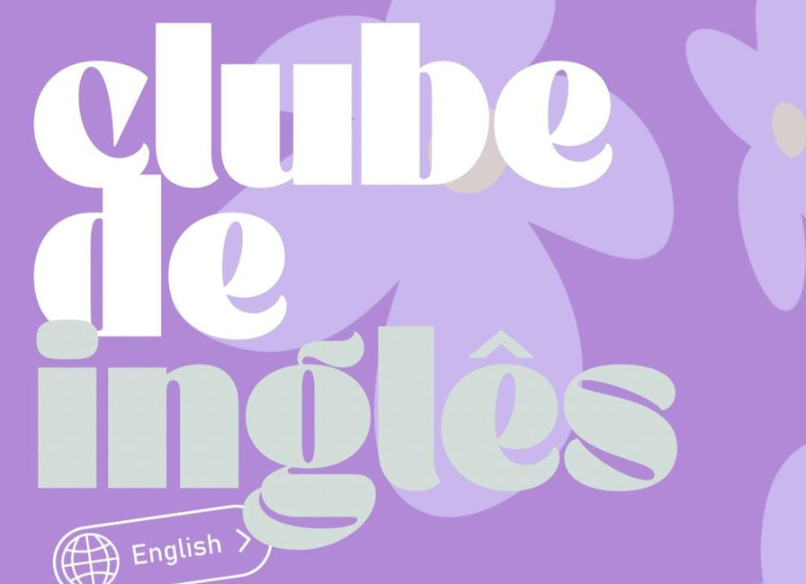
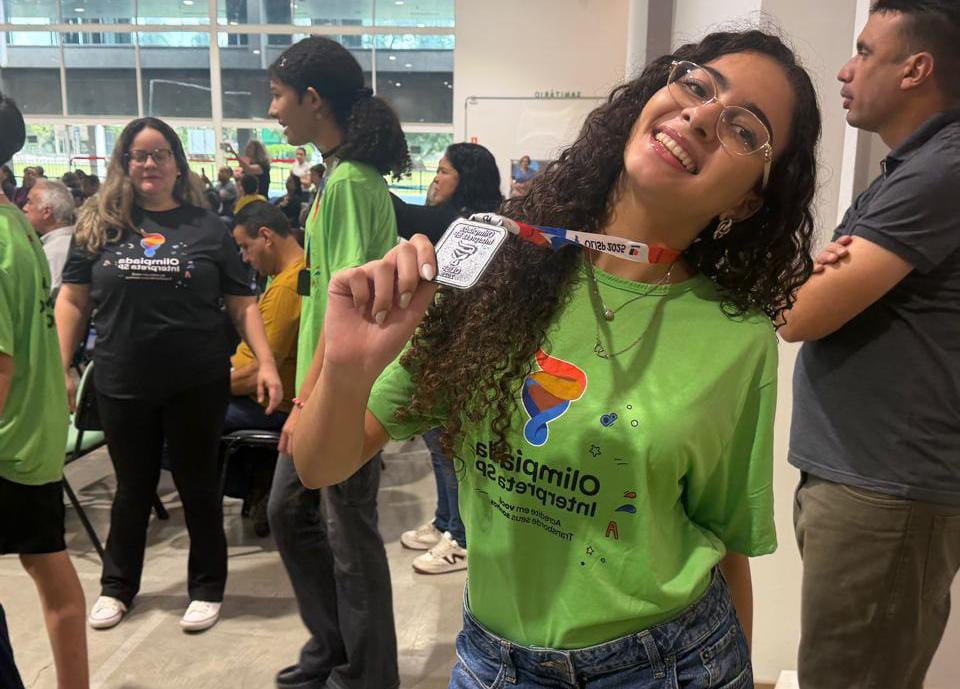
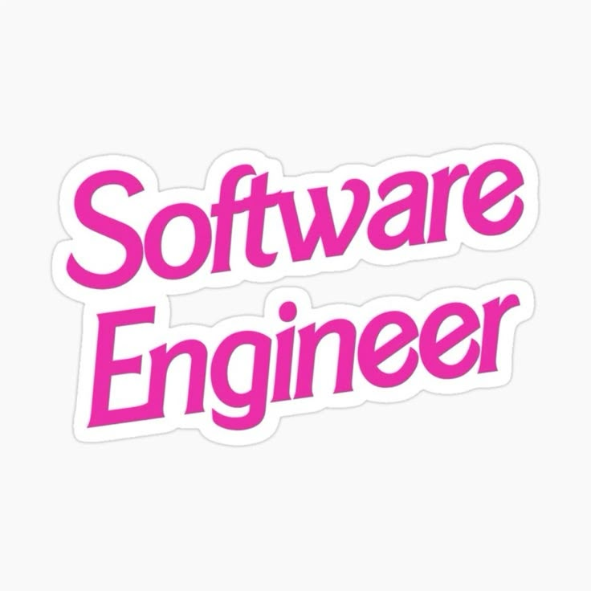

Meu último ano de Ensino Médio!
Ainda estou construindo a história dessa página, mas tenho certeza que o final vai ser incrível!

Participo como voluntária no projeto GUFH (Girl Up Fly High), onde contribuo ministrando aulas de inglês. Essa experiência me permite compartilhar conhecimentos, incentivar o aprendizado do idioma e apoiar o desenvolvimento educacional de outras pessoas, além de fortalecer minhas habilidades de comunicação, empatia e liderança.
No segundo ano, conheci a Mari e Coly, pessoas que se tornaram muito importantes e especiais para mim. Amizades das quais sei que posso contar. Com elas eu compartilho risadas, histórias, conselhos e desabafos. Elas fazem da minha rotina na escola ser muito mais leve e divertida, espero que ao terminar o ensino médio a nossa amizade continue mais forte do que já é!


Como parte do meu projeto de vida, pretendo cursar Engenharia de Software, área que reúne tecnologia, inovação e desenvolvimento de soluções digitais. Meu objetivo é aprofundar meus conhecimentos em programação e tecnologia, contribuindo no futuro para a criação de sistemas e ferramentas que possam impactar positivamente a sociedade.